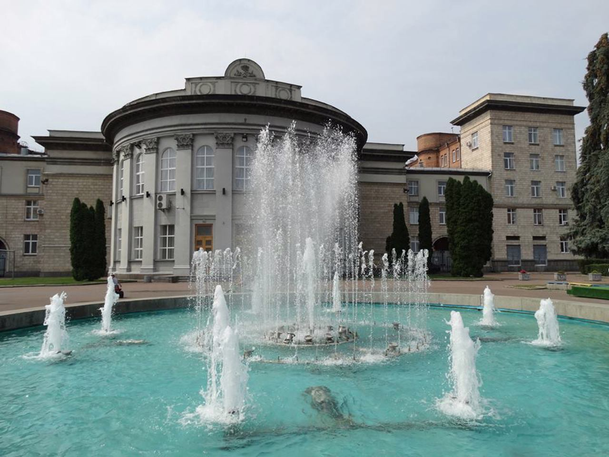
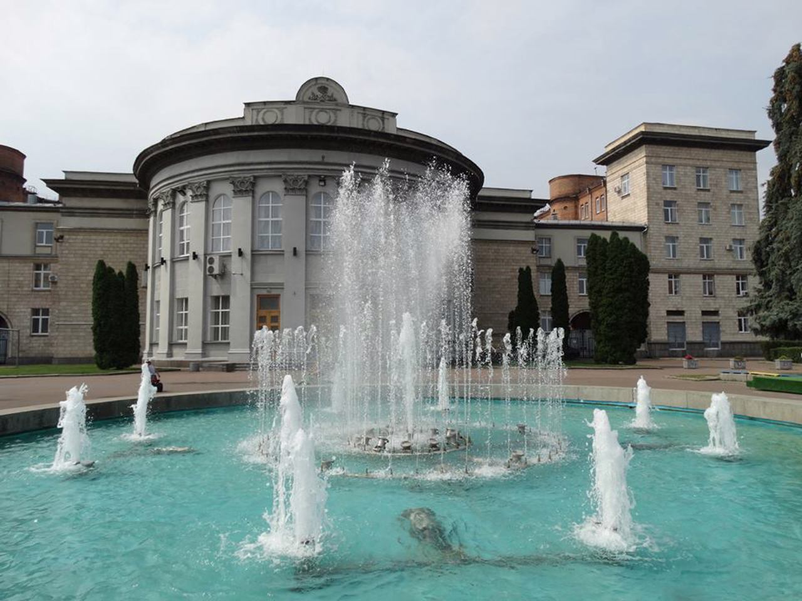
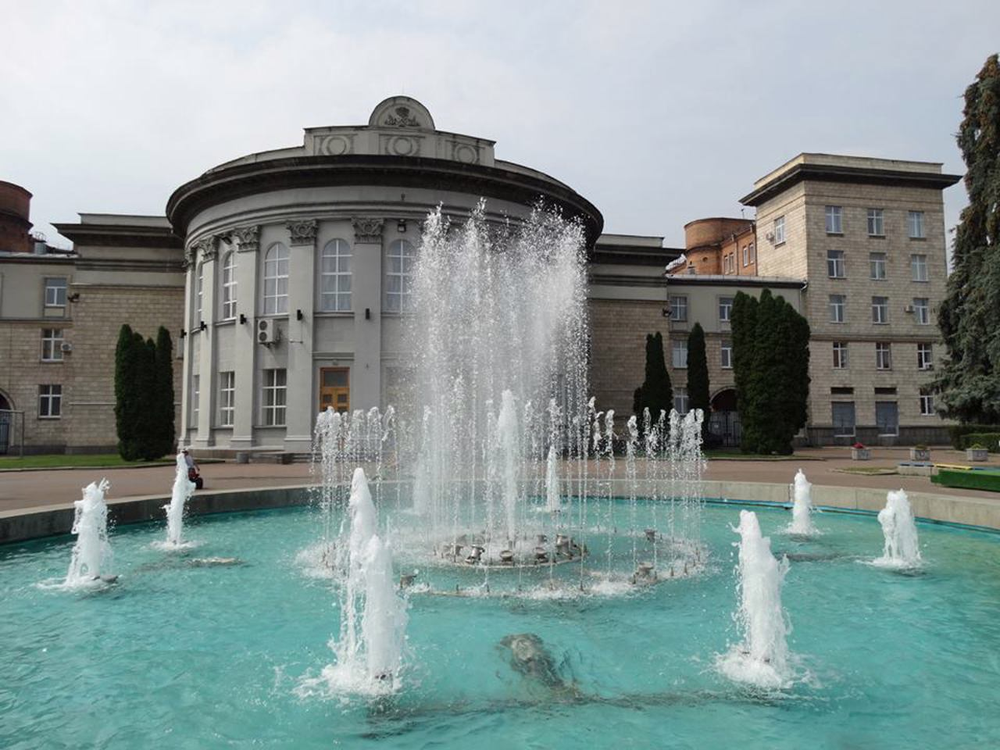

Фонтани
Соборна площа в Черкасах є прикладом сучасної реконструкції, яка трансформує місто. Тут розташовані чудові клумби і два оригінальних фонтани.
на мапі

Соборна площа в Черкасах є прикладом сучасної реконструкції, яка трансформує місто. Тут розташовані чудові клумби і два оригінальних фонтани.
на мапі

Парк розміщується на березі Кременчуцького водосховища, та неподалік від центральної частини міста. На території парку знаходяться маленькі озера з фонтанами всередині.
на мапіБлакитний палац – одна з визначних пам'яток Черкас, він внесений до всіх путівників міста. Автором будівлі є відомий архітектор Владислав Городецький, за проектом якого створено легендарний Будинок із химерами в Києві.
на мапі